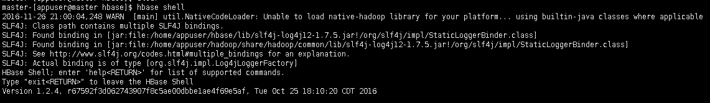
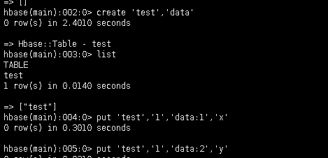
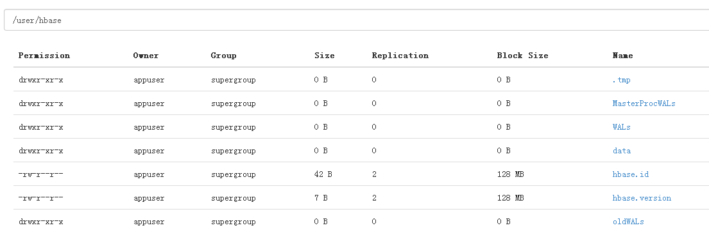
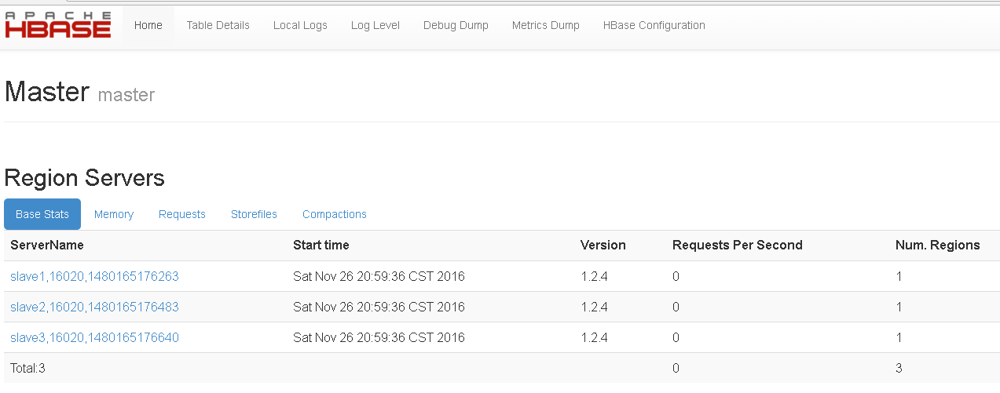

最近在研究Hadoop相关组件的安装，本篇主要研究Hbase的安装。Hbase作为Hadoop家族中重要的数据库解决方案，对以后的Hive等数据库都有非常大的帮助。
准备工作
本节主要阐述Hbase集群的环境。
1. 系统环境：Linux6.9；
2. JAVA：JDK1.8.0_111；
3. Hadoop：2.6.0；
4. Zookeeper：3.4.9（3节点：slave1/slave2/slave3）。
下载文件
一般Apache的项目，可以从官网上选择相应的镜像作为下载站点，版主以清华大学的镜像作为下载站点，速度比较快。下载完成以后，直接解压即可：
tar -xf hbase-1.2.4-bin.tartar -xf hbase-1.2.4-bin.tar.gz直接解压到当前路径下。
配置启动
Hbase的配置，主要是对于Hbase-env.sh/Hbase-site.sh的配置。
Hbase环境配置Hbase-env.sh：
## 配置主要HOME
export JAVA_HOME=/home/appuser/jdk
export HADOOP_HOME=/home/appuser/hadoop
export HBASE_HOME=/home/appuser/hbase
# 配置RegionServer
export HBASE_REGIONSERVERS=/home/appuser/hbase/conf/regionservers
# true:Hbase自己管理Zookeeper
# flase:通过独立Zookeeper管理
export HBASE_MANAGES_ZK=falseHbase主要参数配置Hbase-site.sh：
<<property>
<name>hbase.rootdirname>
<value>hdfs://master:9000/user/hbasevalue>
property>
<property>
<name>hbase.cluster.distributedname>
<value>truevalue>
property>
<property>
<name>hbase.replicationname>
<value>truevalue>
property>
<property>
<name>hbase.mastername>
<value>maste:60000value>
property>
<property>
<name>hbase.zookeeper.quorumname>
<value>slave1,slave2,slave3value>
property>
<property>
<name>hbase.zookeeper.property.clientportname>
<value>2181value>
property>Hbase的regionservers配置：
slave1
slave2
slave3基于以上配置之后，可以在Master节点启动Hbase ：
~/hbase/bin/start-hbase.sh ~/hbase/bin/start-hbase.sh start如果出现以下类似信息，说明只在Master节点启动，RegionServer没有启动：
starting regionserver, logging starting regionserver, logging to /home/appuser/hbase/logs/hbase-appuser-regionserver-hs-slave1.out
Java HotSpot(TM) 64-Bit Server VM warning: ignoring option PermSize=128m; support was removed in 8.0
Java HotSpot(TM) 64-Bit Server VM warning: ignoring option MaxPermSize=128m; support was removed in 8.0如果启动成功，会出现下面的类似信息：
starting master, logging starting master, logging to /home/appuser/hbase/logs/hbase-appuser-master-master.out
Java HotSpot(TM) 64-Bit Server VM warning: ignoring option PermSize=128m; support was removed in 8.0
Java HotSpot(TM) 64-Bit Server VM warning: ignoring option MaxPermSize=128m; support was removed in 8.0
slave3: starting regionserver, logging to /home/appuser/hbase/logs/hbase-appuser-regionserver-slave3.out
slave2: starting regionserver, logging to /home/appuser/hbase/logs/hbase-appuser-regionserver-hs-slave2.out
slave1: starting regionserver, logging to /home/appuser/hbase/logs/hbase-appuser-regionserver-hs-slave1.out
slave3: Java HotSpot(TM) 64-Bit Server VM warning: ignoring option PermSize=128m; support was removed in 8.0
slave3: Java HotSpot(TM) 64-Bit Server VM warning: ignoring option MaxPermSize=128m; support was removed in 8.0
slave2: Java HotSpot(TM) 64-Bit Server VM warning: ignoring option PermSize=128m; support was removed in 8.0
slave2: Java HotSpot(TM) 64-Bit Server VM warning: ignoring option MaxPermSize=128m; support was removed in 8.0
slave1: Java HotSpot(TM) 64-Bit Server VM warning: ignoring option PermSize=128m; support was removed in 8.0
slave1: Java HotSpot(TM) 64-Bit Server VM warning: ignoring option MaxPermSize=128m; support was removed in 8.0测试Hbase
首先可以启动Hbase测试是否正确安装Hbase，如果启动过程没有报错信息，那么安装成功：

其次可以创建表，写入内容，查看是否正常，如果正常说明安装成功：

通过以上操作以后，可以查看Hadoop相应路径上是否存在数据：

另外，可以通过WebUI确定RegionServer是否启动，端口是否正常，地址：[You URL:16010/]：

通过页面可以看出确实存在3个RegionServer，且每个Server只有一个Region 。
注
- Hbase-site中配置的NAME中的值，最好选择小写。版主第一次使用大写，结果配置没有生效；
- 每台机器上都配置JAVA_HOME变量，安装JDK。如果没有，会报错Java Not Found；
- Zookeeper选择奇数(1,3,5,7…)台机器安装，本例3个节点安装。
本博客所有文章除特别声明外，均采用 CC BY-SA 4.0 协议 ，转载请注明出处！